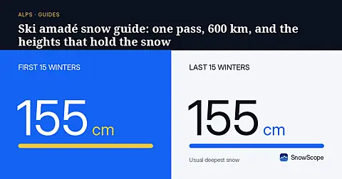

How much snow is coming in the Alps? Up to 64 cm at Jungfraujoch Snow Fun Park by 25 November
How much snow is coming in the Alps, and where? By 25 November the forecast adds 64 cm at Jungfraujoch Snow Fun Park, 57 cm at Alpe d'Huez Grand Domaine and 57 cm at La Grave to the snowpack. Two kinds of numbers here: model estimates for the upper slopes of each resort, and station measurements that are exact but cover one point on the date shown. Every number here is an estimate with some uncertainty; the trend over several days is usually more reliable than one value.
See the live snow forecast for Jungfraujoch Snow Fun Park in the SnowScope appSnow depth, powder alerts and the 3D map, free.
Today's snow store
The deepest snowpack of this group is at La Grave, about 171 cm on the upper slopes; next are Alpe d'Huez Grand Domaine 125 cm and Jungfraujoch Snow Fun Park 63 cm.
Our model spreads today's snow over 108,680 km² in the Alps, reaching 1,104 of 1,204 resorts.
| Resort | Snow depth | New snow, 72 h | Coming, next days | Top |
|---|---|---|---|---|
| Jungfraujoch Snow Fun Park | 63 cm | 89 cm | 64 cm | 3,461 m |
| Alpe d'Huez Grand Domaine | 125 cm | 123 cm | 57 cm | 3,306 m |
| La Grave | 171 cm | 127 cm | 57 cm | 3,543 m |
| Engelberg Titlis | 42 cm | 63 cm | 48 cm | 3,040 m |
| Le Collet d'Allevard | 54 cm | 89 cm | 47 cm | 2,084 m |

The snow still to come
Up to 64 cm of new snow is forecast at Jungfraujoch Snow Fun Park over the next days.
Forecasts move: the timing is usually more reliable than the totals, so check again two days before you go.
At about 3,450 m, Jungfraujoch Snow Fun Park has 49 cm today; a normal 22 November has 81 cm there.
That is more than in 7 of the 46 past winters on this date.
In past winters the best snow at Jungfraujoch Snow Fun Park usually came mid-April / late April.
Day by day at Jungfraujoch Snow Fun Park: Sunday 22 November 34 cm; Monday 23 November 44 cm; Tuesday 24 November 1 cm; Wednesday 25 November 19 cm.
Height by height at Jungfraujoch Snow Fun Park: 3,439 m 50 cm on the ground, 70 cm more in the next 7 days; 3,450 m 50 cm on the ground, 70 cm more in the next 7 days; 3,461 m 50 cm on the ground, 70 cm more in the next 7 days.
Snow still to come
More snow, and so more stored water, is on the way: by 25 November our forecast gives 48 cm at Engelberg Titlis and 47 cm at Le Collet d'Allevard.
Since 20 November the snow cover went up from 83,480 km² to 108,680 km²; on 25 November the forecast gives 135,600 km².
Height and the snow line
With the freezing level at 2,520 m to 3,360 m on 23 November, below the base of Jungfraujoch Snow Fun Park, any precipitation should fall as snow and stay on the mountain.
At Alpe d'Huez Grand Domaine the freezing level reaches 2,030 m to 2,630 m on 24 November: lower down the snow may turn wet, higher up it stays cold.
With the freezing level at 2,300 m to 3,210 m on 23 November, the lower slopes of La Grave may get wet snow or melt, while the top stays wintry.
Our model splits Jungfraujoch Snow Fun Park into three heights: 50 cm at the top (3,461 m), 50 cm at mid-mountain (3,450 m), 50 cm at the base (3,439 m).
Avalanche danger and safety
Forecasts a few days ahead can change: look at the map again the day before you travel.
Tips for skiers
- Forecasts a few days ahead can change: look at the map again the day before you travel.
- When the melting line sits above the resort, the snow turns wet. The highest lifts are the safe bet.
- Light new snow packs down within hours under sun and skis. Go early to catch it at its best.
- Before you ski off-piste or go touring, read the official avalanche bulletin (links below).
- Get a powder alert in the SnowScope app to know when Jungfraujoch Snow Fun Park gets fresh snow.
About these numbers
Resort snow depths are the deepest snow on the resort's upper slopes from the SnowScope snow model (about 1 km, run of 22 November); they are estimates for an area, not a measurement at one point. Station values are measurements on the date shown. Forecasts can change. Always read the official avalanche bulletin before going off-piste.
Official avalanche bulletins: EAWS (Alps)
Cite this report
For research, teaching or the press: the numbers and charts are free to reuse under CC BY 4.0 with this citation.
SnowScope (2026), How much snow is coming in the Alps? Up to 64 cm at Jungfraujoch Snow Fun Park by 25 November, https://snowscope.app/blog/en/2026/11/alps-jungfraujoch-snow-fun-park-snow-forecast-22-november-2026.html, accessed 2026-11-22
SnowScope (Atlas Labs). (2026, November 22). How much snow is coming in the Alps? Up to 64 cm at Jungfraujoch Snow Fun Park by 25 November. SnowScope snow reports. https://snowscope.app/blog/en/2026/11/alps-jungfraujoch-snow-fun-park-snow-forecast-22-november-2026.html
BibTeX
@misc{snowscope2026alpsjungfraujochsnowfunp,
author = {{SnowScope (Atlas Labs)}},
title = {How much snow is coming in the Alps? Up to 64 cm at Jungfraujoch Snow Fun Park by 25 November},
year = {2026},
month = nov,
howpublished = {\url{https://snowscope.app/blog/en/2026/11/alps-jungfraujoch-snow-fun-park-snow-forecast-22-november-2026.html}},
note = {Published 2026-11-22 12:06 UTC; accessed 2026-11-22}
}· CC BY 4.0 · Methods, data and tools →
Jungfraujoch Snow Fun Park: snow and temperature by height, this winter vs last (tools) →
Follow Jungfraujoch Snow Fun Park
Free: a message when fresh snow is coming, and the forecast every morning.
More snow reports

Austria's largest ski pass area month by month: usual snow depth at the base, mid-mountain and the top from 46 past winters, where the snow is safe in December and where it is thin, and the weeks that never fail.

The Mölltal glacier above Flattach: usual snow depth at the base, mid-mountain and the top from 46 past winters, from the first snow in September to the May skiing, and why the depth is a different world from the valley.

Alpine day passes from 36 EUR: nine resorts compared by price, kilometres of runs and the snow they usually hold, to find the best day of skiing for your money.